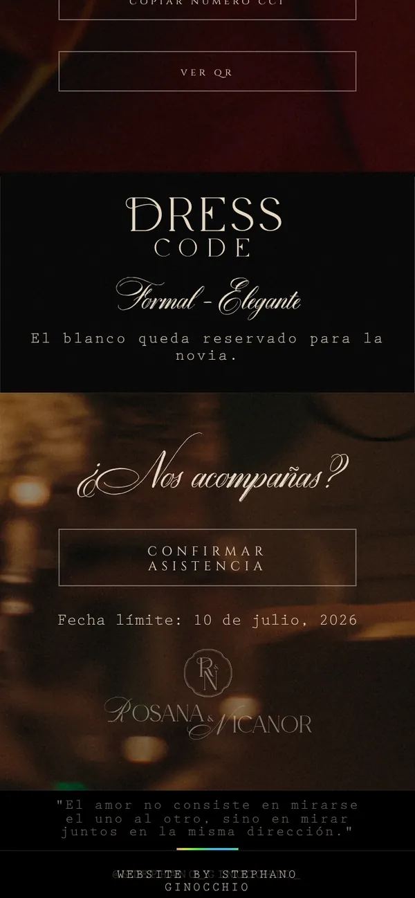
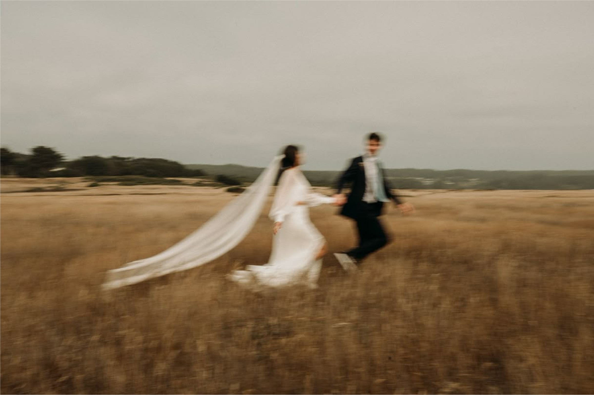
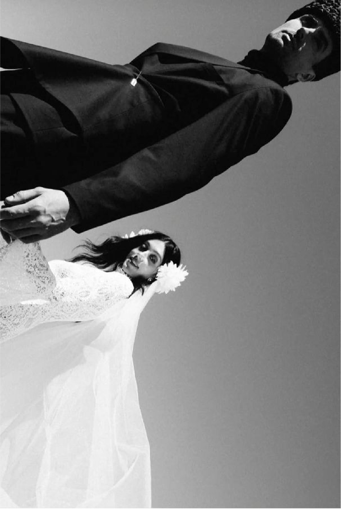
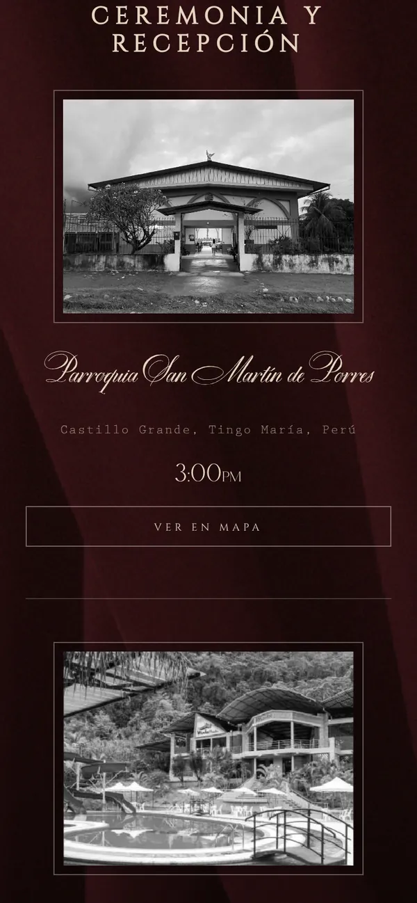
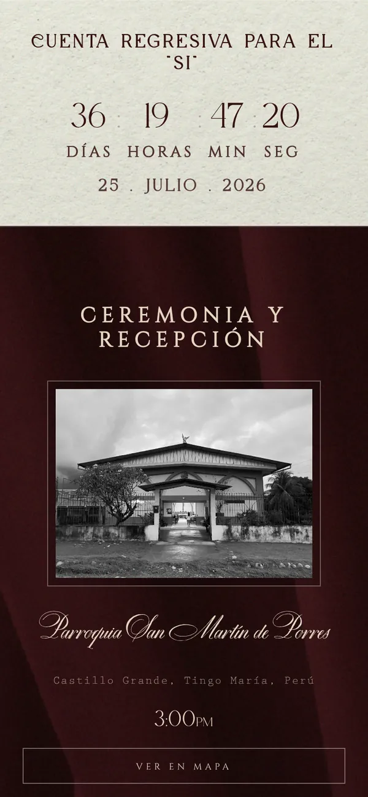
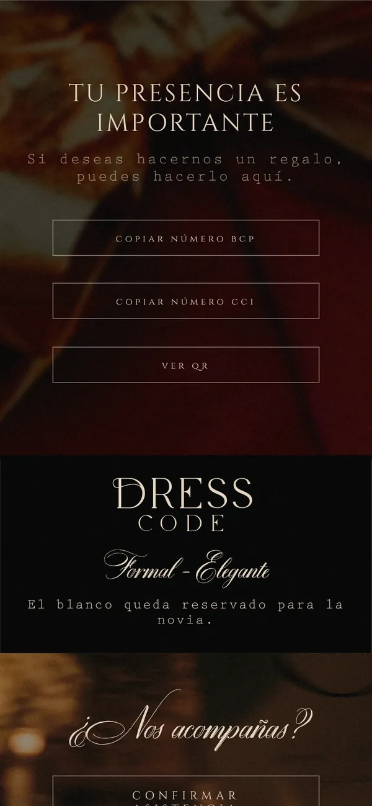
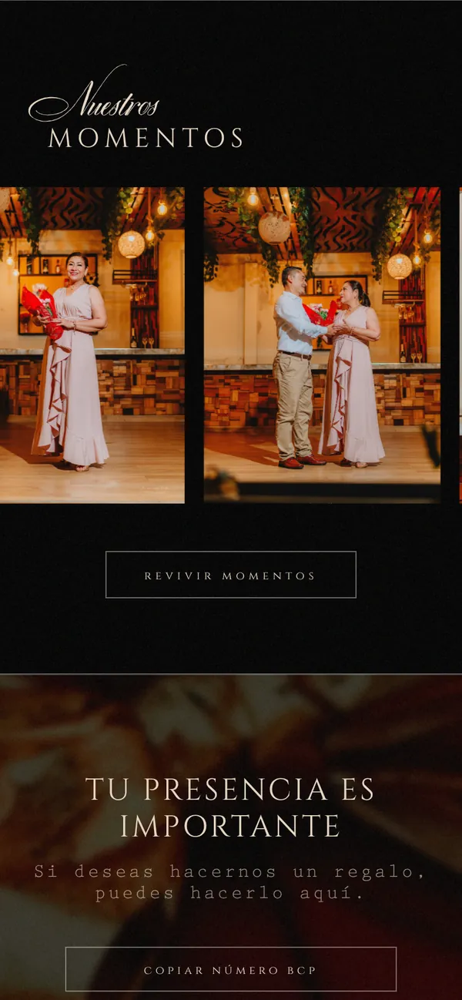
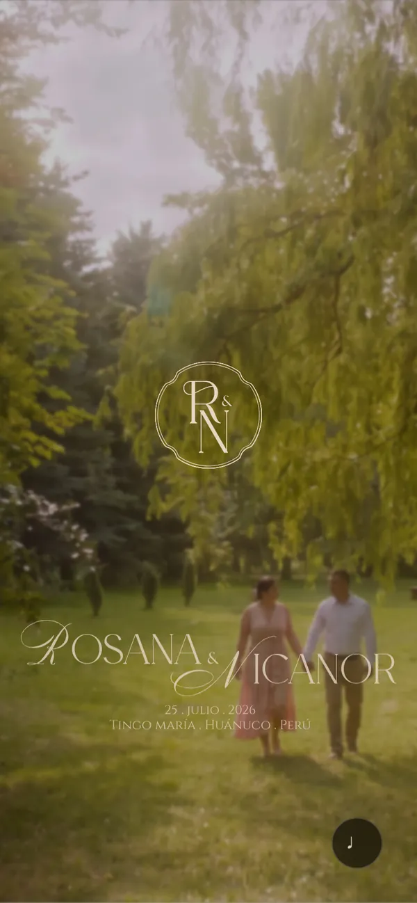

Confirmaciones ordenadas. Cada invitado confirma desde su celular y las respuestas llegan juntas a una lista. Nada de perseguir a nadie por chat.

Invitaciones web de boda,
diseñadas una por una.

whiim diseña invitaciones web de boda desde cero. Cada una parte de su historia, sus fotos y el tono de su celebración, y se programa a mano para que se vea impecable en cualquier celular. Un solo link reemplaza a la invitación impresa y reúne lo que sus invitados necesitan: fecha, lugares, mapas, regalos, dress code y confirmación de asistencia.
Diseñadas por Stephano Ginocchio, en Lima.
Nos cuentan su historia, la fecha, el lugar y el tono de su boda. De esa conversación sale todo el diseño.
Les mostramos la dirección visual: tipografía, color, fotos y estructura, pensada solo para ustedes.
Ajustamos textos, fotos y detalles hasta que la invitación se sienta completamente suya.
La construimos y la probamos en celulares y computadoras. Liviana, rápida y sin apps que descargar.
Reciben un link para compartir por WhatsApp. Las confirmaciones llegan juntas, en una lista ordenada.
Después de la boda la invitación sigue en línea. Con su permiso, entra al archivo de whiim.
50% para empezar, 50% antes de publicar.

Confirmaciones ordenadas. Cada invitado confirma desde su celular y las respuestas llegan juntas a una lista. Nada de perseguir a nadie por chat.

Lugares y horarios. Ceremonia y recepción con su hora y un botón al mapa. Un toque y llegan sin preguntar.

Cuenta regresiva. Los días, horas y minutos que faltan, siempre a la vista y con el diseño de su invitación.

Regalos sin incomodar. Cuentas o billeteras digitales en una sección discreta: el invitado copia el número con un toque.

Sus fotos, su historia. Una galería y un relato que convierten la invitación en un recuerdo, no solo en un aviso.

Música desde la portada. La invitación se abre con su canción. Desde el primer segundo ya se siente como su boda.
Pantallas reales de la invitación de Rosana & Nicanor.
Cuéntennos la fecha y el lugar de su boda. Les respondemos con disponibilidad, precio y los siguientes pasos. Tomamos pocas bodas por mes, para que cada invitación tenga el tiempo que merece.
Escríbenos